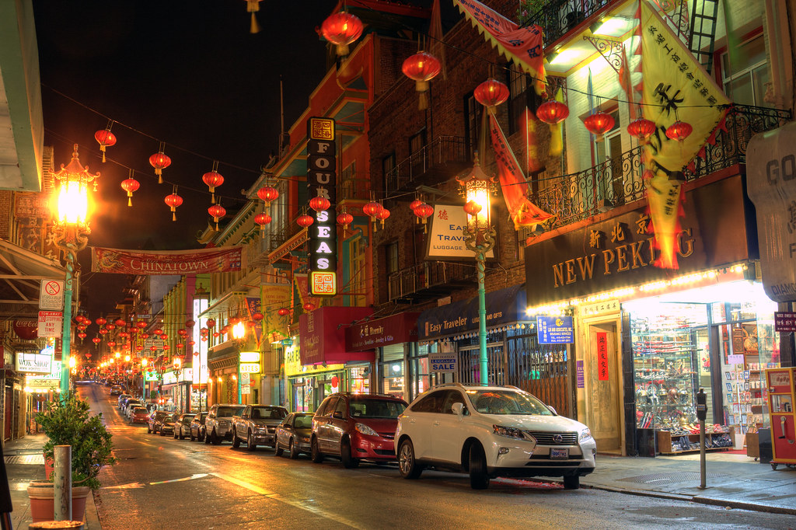

Binondo is a district in Manila and is referred to as the city's Chinatown. It is a placed where the oldest Chinatown located. Binondo is the center of commerce and trade of Manila, where all types of business run by Filipino-Chinese thrive. In 1594, a Spanish Governor named Luis Perez Dasmarinas founded Binondo for the settlement of Chinese immigrants who converted to Catholicism. The name “Binondo” was derived from the word "binundok" meaning mountain, referring to the place's hill-like feature.
Binondo is the oldest Chinatown in the world and one of the most popular tourist destinations in Manila. Here are some of the things that make Binondo special:
Food: Binondo is known for its vibrant food scene, offering a variety of Chinese and Filipino cuisine. Visitors can sample street food, dine at local eateries, or try more upscale restaurants.
Culture: Binondo is a melting pot of Chinese and Filipino cultures. Visitors can explore the traditional Chinese temples, participate in cultural events, and shop for souvenirs at local markets.
History: Binondo has a rich history that dates back to the Spanish colonial era. Visitors can see the iconic Binondo Church, the famous Santa Cruz Bridge, and other historic landmarks that tell the story of the area's past.
Architecture: Binondo is home to several beautiful buildings and architectural landmarks, including the Kaisa-Angelo King Heritage Center, the Kim Chong Tin Building, and the Bahay Tsinoy Museum.
Location: Binondo is conveniently located in the heart of Manila, making it easy to access from other major tourist destinations in the city.
Overall, Binondo is a must-visit destination for anyone interested in exploring the unique cultural heritage and vibrant food scene of Manila's Chinatown. Its rich history, beautiful architecture, and convenient location make it a popular destination for tourists and locals alike.